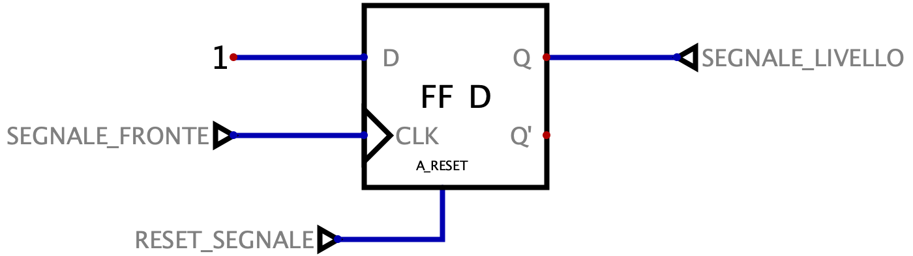
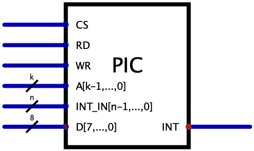

Definizione - Controllare il verificarsi di eventi
In un sistema a microprocessore è essenziale poter gestire eventi. I possibili eventi interessanti possono essere classificati in base alla "sorgente", che può essere:
Il controllo periodico (polling) consiste infatti in una serie di istruzioni che "rallentano" il normale flusso del codice e che sono eseguite in ogni caso, anche se non necessarie.
- esterna, solitamente generata da perifiche;
- interna, detta anche eccezione ("exception"), che può informare di situazioni critiche che si sono verificate.
- il polling, che consiste nel controllo periodico dello stato di questi eventi;
- l'utilizzo di uno o più segnali di INT ("Interrupt"), che indicano la presenza di un evento da gestire.
Il controllo periodico (polling) consiste infatti in una serie di istruzioni che "rallentano" il normale flusso del codice e che sono eseguite in ogni caso, anche se non necessarie.
Nota bene - Ad esempio
Un esempio molto comune di segnale di interrupt generato è il mouse, che informa il processore di eventi come lo spostamento, la pressione di un tasto, ecc.
Definizione - Gestione di eventi
Una volta presa coscienza dell'evento, è necessario (se è abilitata la gestione) reagire: per farlo si esegue automaticamente una porzione di codice detta interrupt handler che si comporterà in maniera adeguata.
Definizione - Segnale di interrupt
Il segnale di interrupt permette la segnalazione di un evento esterno ed è paragonabile ad una "notifica push" hardware. Dovendo segnalare un evento anche proveniente dall'esterno, esso ha una natura asincrona e non segue la temporizzazione del clock.
Tale segnale, inoltre, può essere soggetto a diverse scelte progettuali:
Tale segnale, inoltre, può essere soggetto a diverse scelte progettuali:
- è possibile che siano presenti uno o più ingressi di interrupt, per discriminare diverse priorità. È comune infatti anche il segnale NMI (Non Maskable Interrupt) per segnalare interruzioni particolarmente importanti.
- è possibile che il sistema sia sensibile al fronte di salita del segnale oppure che sia necessario che esso venga mantenuto a livello fino a quando non sono state gestite tutte le sorgenti di interrupt (ma eventualmente è possibile anche che si rispettino entrambe le condizioni);
- è possibile che il segnale di interrupt possa essere generato anche da istruzioni software (ad esempio per invocare system calls).
- è possibile che il segnale di interrupt interrompa l'istruzione in esecuzione oppure che aspetti la sua terminazione.
Definizione - Gestione di più sorgenti di interrupt
In un qualsiasi sistema è comune la presenza di diverse sorgenti di interruzione (anche con priorità differente) nonostante sia presente un unico ingresso per la segnalazione. A proposito di ciò, ogni sistema può adottare diverse politiche di gestione delle priorità, ad esempio:
La scelta più "auspicabile" sarebbe la possibilità di alternare l'esecuzione di un'altro interrupt handler associato ad eventi con priorità maggiore. Per fare ciò, deve essere permesso l'annidamento (nesting) del codice, implementabile tramite uno stack.
Senza creare questa complessità, un'alternativa potrebbe essere rendere "indivisibile" ogni interrupt handler, ovvero disabilitare la gestione degli interrupt durante l'esecuzione di un altro handler. Ovviamente, la gestione della priorità in questo caso dovrà essere fatta "a monte": ovvero, nel caso di invocazione simultanea di eventi con priorità differente, dovrà essere data precedenza all'evento con priorità maggiore (facilmente realizzabile via software).
- a priorità fissa;
- a priorità variabile;
- ecc.
La scelta più "auspicabile" sarebbe la possibilità di alternare l'esecuzione di un'altro interrupt handler associato ad eventi con priorità maggiore. Per fare ciò, deve essere permesso l'annidamento (nesting) del codice, implementabile tramite uno stack.
Senza creare questa complessità, un'alternativa potrebbe essere rendere "indivisibile" ogni interrupt handler, ovvero disabilitare la gestione degli interrupt durante l'esecuzione di un altro handler. Ovviamente, la gestione della priorità in questo caso dovrà essere fatta "a monte": ovvero, nel caso di invocazione simultanea di eventi con priorità differente, dovrà essere data precedenza all'evento con priorità maggiore (facilmente realizzabile via software).
Definizione - Gestione eventi in DLX
Considerando il processore DLX, per la gestione degli eventi (detti genericamente exception anche se provenienti da sorgenti esterne), si ha che:
- esiste un unico segnale di interrupt INT sensibile al livello del segnale;
- assumeremo, per semplicità, che l'istruzione in esecuzione al momento della segnalazione termini prima che sia eseguito l'interrupt handler;
- non è permesso l'annidamento degli interrupt handler (si ha infatti che in DLX non è implementato alcuno stack hardware). Nel caso si volesse permettere l'annidamento sarebbe necessario implementare uno stack di tipo software utilizzando le istruzioni MOVS2I e MOVI2S per salvare lo storico dei valori del registro IAR. Oltre a questo, sarebbero inoltre necessarie istruzioni software per abilitare e disabilitare la gestione degli interrupt.
- salva il valore del Program Counter nel registro IAR (Interrupt Address Register);
- è effettuato un salto all'indirizzo 0x0000 0000, in cui è presente l'interrupt handler (oltre al codice di inizializzazione del sistema);
- in caso di interruzioni multiple, è stabilito quale degli interrupt ricevuti ha priorità maggiore;
- viene disabilitata la gestione di ulteriori interrupt;
- una volta gestito l'evento è necessario utilizzare l'istruzione RFE (Return From Exception) per ripristinare il valore del Program Counter, riabilitare la gestione degli interrupt e riprendere la normale esecuzione.
Definizione - Rete logica per la trasformazione fronte-livello
Dato che considereremo la sensibilità al livello del segnale INT, può essere utile una rete logica che trasforma un segnale "a fronte" in un segnale a livello. Una rete valida potrebbe essere la seguente: In questo caso, al fronte di salita di SEGNALE_FRONTE il flip-flop emetterà il valore a livello. A questo punto, per reimpostarlo a 0, è necessario asserire il segnale RESET_SEGNALE.

Definizione - Approcci per la gestione di eventi con priorità differenti
Nel caso di interruzioni multiple con priorità differenti, è possibile utilizzare approcci differenti.
Una possibile soluzione (più semplice da implementare) è via "software" in cui saranno controllate le possibili fonti di interrupt in ordine di priorità. Alternativamente, è possibile affidarsi ad una rete logica esterna detta PIC (Programmable Interrupt Controller) che non fa altro che convogliare le possibili sorgenti di interrupt e indicare quale degli interrupt è necessario gestire (secondo una policy prestabilita).
Una possibile soluzione (più semplice da implementare) è via "software" in cui saranno controllate le possibili fonti di interrupt in ordine di priorità. Alternativamente, è possibile affidarsi ad una rete logica esterna detta PIC (Programmable Interrupt Controller) che non fa altro che convogliare le possibili sorgenti di interrupt e indicare quale degli interrupt è necessario gestire (secondo una policy prestabilita).
Definizione - PIC
Il PIC (Programmable Interrupt Controller) è una rete logica adibita alla gestione di eventi con diversa priorità. Una possibile struttura può essere caratterizzata da:
- \( n\) segnali in input di interrupt INT_IN (uno per ogni sorgente), provenienti dalle diverse sorgenti di interrupt;
- i segnali di CS (Chip Select), RD, WR (considerando che è una rete programmabile può essere utile effettuare anche cicli di scrittura, ad esempio per modifcare la politica di gestione delle interruzioni);
- un Bus Address di \( k \mathrm{ \, bit }\) in ingresso;
- un Bus Dati bidirezionale, tipicamente di \( 8 \mathrm{ \, bit }\), per permettere lo scambio di informazioni;
- un segnale INT in output da collegare al microprocessore.

Definizione - Consistenza dei dati a seguito di interruzioni
Come è stato detto, le interruzioni possono verificarsi in qualsiasi momento e quindi anche durante l'esecuzione di altri programmi.
È necessario considerare che i registri utilizzabili dall'handler sono gli stessi del programma "principale". Per questo motivo occorre, per rendere consistente l'esecuzione dei programmi, salvare il valore dei registri che si andranno a modificare in memoria per poi ripristinarli al termine dell'handler (o, alternativamente, scegliere e utilizzare registri non utilizzati dal programma principale).
È necessario considerare che i registri utilizzabili dall'handler sono gli stessi del programma "principale". Per questo motivo occorre, per rendere consistente l'esecuzione dei programmi, salvare il valore dei registri che si andranno a modificare in memoria per poi ripristinarli al termine dell'handler (o, alternativamente, scegliere e utilizzare registri non utilizzati dal programma principale).
Definizione - Codice di inizializzazione e interrupt handler
Se la gestione degli interrupt è abilitata, all'arrivo di un interrupt l'esecuzione si sposterà all'indirizzo 0x0000 0000 dove risiede tuttavia anche il codice di configurazione iniziale (eseguito all'avvio del sistema). Inoltre, proprio perchè si sta configurando il sistema, in questo momento si desidera ignorare qualsiasi interruzione.
Per risolvere queste problematiche, può essere utile considerare un segnale STARTUP che è attivo durante la configurazione iniziale: tale segnale sarà quindi caratterizzato da una rete logica dedicata in grado di gestire i comandi per la lettura e scrittura del suo valore.
Per risolvere queste problematiche, può essere utile considerare un segnale STARTUP che è attivo durante la configurazione iniziale: tale segnale sarà quindi caratterizzato da una rete logica dedicata in grado di gestire i comandi per la lettura e scrittura del suo valore.